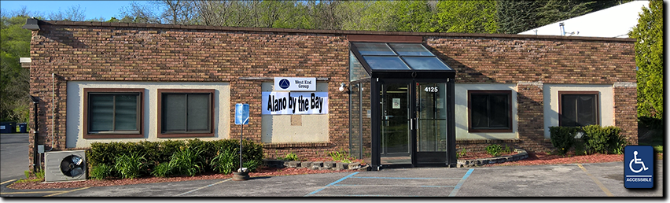

Alano By The Bay, Inc. is a
Michigan 501(c)(3) Nonprofit Corporation.
For a list of current officers and board members, see the Contact Us page.
Public Documents
Board Meeting Minutes
2019
March 1, 2019 Annual Meeting (pending)
March 2019 (pending)
April 2019 (pending)
May 2019
June 2019
July 2019
August 2019
September 2019
October 2019
November 2019
December 2019
-------------------------------------------------------
2018
January 13, 2018 Annual Meeting
March 2018 - No Board Meeting
Mar 31, 2018 Financial Statement
August 2018 - No Board Meeting
Oct. 31, 2018 Financial Statement
Dec. 31, 2018 Financial Statement
-------------------------------------------------------
2017
January 14, 2017 / Q4 Finances
February 25, 2017 / Income Statement
March 6, 2017
April 8, 2017 / Financial Statement
May 13, 2017
June 10, 2017
July 2017 no meeting
August 12, 2017
September 23, 2017
October 7, 2017
November 4, 2017
December 2, 2017
Financial Statement Dec. 31, 2017
-------------------------------------------------------
2016
January 4, 2016
February 1, 2016 / February 8, 2016
March 2016 no meeting
April 4, 2016 / April 18, 2016
May 9, 2016
June 7, 2016
July 2016 no minutes (Blue Angels)
August 1, 2016
September 2016 no meeting
October 3, 2016
November 2016 no quorum; informal meeting
December 10, 2016
-------------------------------------------------------
2015
December 7, 2015 (Founding Meeting)
-------------------------------------------------------

(C) Copyright 2017 Alano By The Bay, Inc.
All rights reserved.
LAST UPDATED 16 NOV 2017 EP